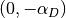

接触する車輪の例 (2つのメッシュ間のアセンブリ、変換、固定サイズ変数の使用)¶
この例では、変形可能な「車輪」が変形可能な基礎と接触します。ここでは python インターフェイスを使用しますが、別のインターフェイスまたは C++ にこのプログラムを翻訳するのは簡単です (前の例を参照)。完全なプログラム demo_wheel_contact.py は、ディレクトリ interface/tests/python にあります。
問題の設定¶
 は2D車輪の参照設定であり、
は2D車輪の参照設定であり、  は変形可能な基礎の参照設定です。これら2つの (線形化弾性) 物体の微小変形とそれらの間の接触を考慮します。また、車輪の周縁は剛であり、車輪に垂直方向の力を適用することを考慮します。
は変形可能な基礎の参照設定です。これら2つの (線形化弾性) 物体の微小変形とそれらの間の接触を考慮します。また、車輪の周縁は剛であり、車輪に垂直方向の力を適用することを考慮します。
プログラムのビルド¶
Getfem をロードし、問題のパラメータを修正することから始めましょう
import getfem as gf
import numpy as np
E = 21E6 # Young Modulus (N/cm^2)
nu = 0.3 # Poisson ratio
clambda = E*nu/((1+nu)*(1-2*nu)) # First Lame coefficient (N/cm^2)
cmu = E/(2*(1+nu)) # Second Lame coefficient (N/cm^2)
clambdastar = 2*clambda*cmu/(clambda+2*cmu) # Lame coefficient for Plane stress (N/cm^2)
applied_force = 1E7 # Force at the hole boundary (N)
h = 1 # Approximate mesh size
elements_degree = 2 # Degree of the finite element methods
gamma0 = 1./E; # Augmentation parameter for the augmented Lagrangian
メッシュ生成¶
車輪の半径は15cm、周縁8cm のもので、車輪は厚さ10cm の変形可能な基礎の上にあると考えます。 GetFEM++ の実験的なメッシャーを使用して、車輪のメッシュを生成します。基礎のメッシュに関しては、構造化されたメッシュを構築します (python インタフェースのメッシュオブジェクトのドキュメントを参照してください)。
mo1 = gf.MesherObject('ball', [0., 15.], 15.)
mo2 = gf.MesherObject('ball', [0., 15.], 8.)
mo3 = gf.MesherObject('set minus', mo1, mo2)
gf.util('trace level', 2) # No trace for mesh generation
mesh1 = gf.Mesh('generate', mo3, h, 2)
mesh2 = gf.Mesh('import','structured','GT="GT_PK(2,1)";SIZES=[30,10];NOISED=0;NSUBDIV=[%d,%d];' % (int(30/h)+1, int(10/h)+1));
mesh2.translate([-15.,-10.])
結果は以下のとおりです

境界の選択¶
境界条件、すなわち周縁の境界 (周縁が剛体であるということを適用するために)、車輪の接触境界、およびクランプされたと仮定する基礎の底部境界を設定するために、異なる名前を選択しなければなりません。
fb1 = mesh1.outer_faces_in_box([-8.1, 6.9], [8.1, 23.1]) # Boundary of the hole
fb2 = mesh1.outer_faces_with_direction([0., -1.], np.pi/4.5) # Contact boundary of the wheel
fb3 = mesh2.outer_faces_with_direction([0., -1.], 0.01) # Bottom boundary of the foundation
HOLE_BOUND=1; CONTACT_BOUND=2; BOTTOM_BOUND=3;
mesh1.set_region(HOLE_BOUND, fb1)
mesh1.set_region(CONTACT_BOUND, fb2)
mesh1.region_subtract(CONTACT_BOUND, HOLE_BOUND)
mesh2.set_region(BOTTOM_BOUND, fb3)
コマンド mesh1.outer_faces_with_direction([0., -1.], n.pi/4) は、ベクトル [0., -1.] で n.pi/4 以下の角度を持つ、外側の法線の単位を持つすべての面を選択することが可能です。コマンド mesh1.region_subtract(CONTACT_BOUND, HOLE_BOUND) は接触境界のリムに対応する面を削除します。
有限要素法の定義と積分法¶
車輪と基礎の変位をそれぞれ近似する mfu1, mfu2 の2つの有限要素法を定義します。 mflambda はリムの剛性を考慮して乗数を近似する有限要素法であり、 mflambda_C は接触乗数(接触圧力)を近似するためにあり、 mfvm1, mfvm2 は Von Mises 応力を補間するために使用され、後処理の基礎となります。 mim1, mim2 は車輪と基礎の2つの積分方法です。
mfu1 = gf.MeshFem(mesh1, 2)
mfu1.set_classical_fem(elements_degree)
mflambda = gf.MeshFem(mesh1, 2)
mflambda.set_classical_fem(elements_degree-1)
mflambda_C = gf.MeshFem(mesh1, 1)
mflambda_C.set_classical_fem(elements_degree-1)
mfu2 = gf.MeshFem(mesh2, 2)
mfu2.set_classical_fem(elements_degree)
mfvm1 = gf.MeshFem(mesh1, 1)
mfvm1.set_classical_discontinuous_fem(elements_degree)
mfvm2 = gf.MeshFem(mesh2, 1)
mfvm2.set_classical_discontinuous_fem(elements_degree)
mim1 = gf.MeshIm(mesh1, pow(elements_degree,2))
mim2 = gf.MeshIm(mesh2, pow(elements_degree,2))
モデル定義¶
実際のモデルを使用して、変位を表す2つの変数を宣言します。
md=gf.Model('real');
md.add_fem_variable('u1', mfu1) # Displacement of the structure 1
md.add_fem_variable('u2', mfu2) # Displacement of the structure 2
線形弾性ブリック¶
Lamé 係数をモデルのデータとして追加して使用し、車輪と基礎の線形化弾性ブリックを追加します。
md.add_initialized_data('cmu', [cmu])
md.add_initialized_data('clambdastar', [clambdastar])
md.add_isotropic_linearized_elasticity_brick(mim1, 'u1', 'clambdastar', 'cmu')
md.add_isotropic_linearized_elasticity_brick(mim2, 'u2', 'clambdastar', 'cmu')
基礎の下部の固定条件¶
例えば、次のブリックの追加と乗算で、基礎の底面の変位をなくすための処置ができます。
md.add_Dirichlet_condition_with_multipliers(mim2, 'u2', elements_degree-1, BOTTOM_BOUND)
接触条件 (補間変換の使用)¶
ここで、2つの構造の間の接触条件を規定する方法を見てみましょう。定義済みのレンガを使用することができます (微小変型/微小滑りは 摩擦ブリック要素との微小すべり接触 そして大変形/大滑りは 摩擦ブリック要素との有限すべり/有限変形接触 を参照してください)。ただし、ここでは、拡張Lagrangian定式化と補間変換を使用して接触条件を直接規定する方法について説明します。
微小変形接触では、1つの接触面の点の間の対応が参照設定に記述されており、進展していないため、もちろん単純ですが、近似値です。
車輪の接触境界がスレーブ1であることを考慮し、車輪の接触境界から基礎の接触境界までの変換を記述しなければなりません。これは、基礎の接触境界が垂直座標の消去に対応するため非常に簡単です。そのため、変換を定義します。

ここで  は点の座標のベクトルです。この変換をコマンドを使用してモデルに追加します。
は点の座標のベクトルです。この変換をコマンドを使用してモデルに追加します。
md.add_interpolate_transformation_from_expression('Proj1', mesh1, mesh2, '[X(1);0]')
その結果、車輪のメッシュから基礎のメッシュまで、この変換を弱形式の言語表現に使用することが可能になります。これは非常に単純な定数式であることに注意してください。データまたはモデルの変数に応じて、より複雑な式を使用できます。変換の式がモデルの変数に依存する場合、接線線形システムでは、この依存関係が自動的に考慮されます (詳細については、 補間変換 を参照してください)。また、大すべり接触に対応し、接触境界間の対応を自動的に検索する変換が GetFEM++ に存在することにも注意してください。 ( レイトレース付き積分接触要素 を参照)。
定義された変換を使用して、我々は、拡張 Lagrangian 式を使用して積分接触条件を記述することができます (詳細については 摩擦ブリック要素との微小すべり接触 を参照)。対応する項 (弱定式化の残りの部分に追加されます) は以下になります。

ここで  はスレーブ接触境界であり、
はスレーブ接触境界であり、  は接触乗数 (接触圧) であり、
は接触乗数 (接触圧) であり、  は要素の半径であり、
は要素の半径であり、  は変換であり、 n はマスター接触境界への外向きの法線ベクトルです(ここで
は変換であり、 n はマスター接触境界への外向きの法線ベクトルです(ここで  )
)  は拡張パラメータであり、
は拡張パラメータであり、  は負の部分であり、
は負の部分であり、  はそれぞれ
はそれぞれ  に対応する試行関数です。
に対応する試行関数です。
弱形式言語を使用すると、次の方法で接触条件を追加できます。
md.add_initialized_data('gamma0', [gamma0])
md.add_filtered_fem_variable('lambda1', mflambda_C, CONTACT_BOUND)
md.add_nonlinear_term(mim1, 'lambda1*(Test_u1.[0;1])'
'-lambda1*(Interpolate(Test_u2,Proj1).[0;1])', CONTACT_BOUND)
md.add_nonlinear_term(mim1, '-(gamma0*element_size)'
'*(lambda1 + neg_part(lambda1+(1/(gamma0*element_size))'
'*((u1-Interpolate(u2,Proj1)+X-Interpolate(X,Proj1)).[0;1])))*Test_lambda1', CONTACT_BOUND);
リムの剛性と垂直力の処理¶
これでリムの剛性を規定しています。リムの垂直方向の変位が何であるかは未知であるため、非標準の状態です。垂直変位のための追加の未知変数を使用することができます。サイズ1の(有限要素フィールドではないことを意味する)固定サイズ変数 alpha_D を追加します。
md.add_variable('alpha_D', 1)
リム境界上の変位を規定する乗数が必要です。
md.add_filtered_fem_variable('lambda_D', mflambda, HOLE_BOUND)
この乗数は、垂直方向の変位  を規定するために必要な境界応力を表します。この乗数に適用する制約は、リム境界上の積分が、適用したい垂直方向の力であることです。弱定式の残りの部分に追加される対応する弱定式項を読み取ります。

ここで  はリムの境界であり、
はリムの境界であり、  は適用された力の密度です。
は適用された力の密度です。
これは弱形式言語でモデルに追加することができます。
md.add_filtered_fem_variable('lambda_D', mflambda, HOLE_BOUND)
md.add_initialized_data('F', [applied_force/(8*2*np.pi)])
md.add_linear_term(mim1, '-lambda_D.Test_u1 + (alpha_D*[0;1]-u1).Test_lambda_D'
' + (lambda_D.[0;1]+F)*Test_alpha_D', HOLE_BOUND)
よりロバスト性を向上させるために  上の小さなペナルティを追加することができます
上の小さなペナルティを追加することができます
md.add_linear_term(mim1, '1E-6*alpha_D*Test_alpha_D');
固定サイズ変数 alpha_D は、リム境界の各点にリンクされていることに注意してください。これは alpha_D に対応する接線行列の行は、ゼロ以外の成分を多く含む可能性があることを意味します。このため、固定サイズ変数の使用は慎重に行う必要があります。
モデル求解¶
次のコードで問題を解くことができます。
md.solve('max_res', 1E-9, 'max_iter', 100, 'noisy')
設定によっては、デフォルトのものよりも基本的な線形探索を使用する方が望ましいことに注意してください。
md.solve('max_res', 1E-9, 'max_iter', 100, 'noisy', 'lsearch', 'simplest', 'alpha min', 0.8)
解のエクスポート¶
次に、VonMiss 応力を伴う解をエクスポートするコードを示します。
U1 = md.variable('u1')
U2 = md.variable('u2')
VM1 = md.compute_isotropic_linearized_Von_Mises_or_Tresca('u1', 'clambdastar', 'cmu', mfvm1)
VM2 = md.compute_isotropic_linearized_Von_Mises_or_Tresca('u2', 'clambdastar', 'cmu', mfvm2)
mfvm1.export_to_vtk('displacement_with_von_mises1.vtk', mfvm1, VM1, 'Von Mises Stresses',
mfu1, U1, 'Displacements')
mfvm2.export_to_vtk('displacement_with_von_mises2.vtk', mfvm2, VM2, 'Von Mises Stresses',
mfu2, U2, 'Displacements')
# You can view solutions with for instance:
# mayavi2 -d displacement_with_von_mises1.vtk -f WarpVector -m Surface -d displacement_with_von_mises2.vtk -f WarpVector -m Surface

解のプロット。

目次
前のトピックへ
熱および電気弾性連成の例 (単純な非線形結合問題、モデルオブジェクト、汎用アセンブリ、解析および可視化)
次のトピックへ
Download
Main documentations
- GetFEM++ User documentation
- Python Interface
- Matlab Interface
- Scilab Interface
- Gmm++
- GetFEM++ project